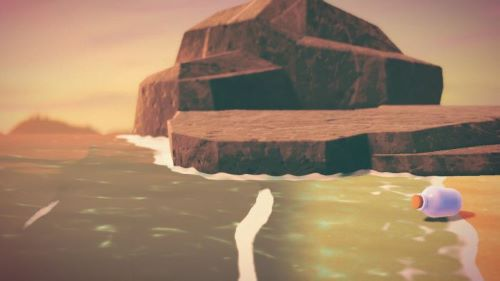

Your Character
In every Animal Crossing game, you begin your story with the creation of your very own character, the one you will be controlling. This is also the only “human” character, as all the other characters you interact with are animal villagers or NPC’s (non-playable characters). Each game introduces your character in a different way, but they all generally ask for gender preference, name, and more recently with New Horizons, initial customization. You can customize skin, eyes, hair, and other facial features as you begin and unlock more customize options later in the game. Don’t forget to play dress up with all the clothes and accessories from the Ables Sisters! Your character can be designed after yourself, or completely made up. One of the best things about Animal Crossing is the sandbox quality; you can be as creative as you want to be!
Your Island
The island getaway theme is unique to Animal Crossing: New Horizons. However, each version of the game includes a beach as a water feature. New Horizons allows you to choose between 4 maps which island layout you prefer. No matter which you choose, everyone’s island will have all the buildings, river mouths, and rock features. You have the opportunity to name your island in the beginning of the game as well, which is unchangeable after that point (so choose wisely unless you want to start over!) An exciting and unique addition to New Horizons is terraforming. This unlockable in-game feature allows you to remodel the terrain of your island. You can build cliffs and waterways, and lay down paths of dirt, stand, stone, and so much more. There are some limitations to what you can and can’t terraform, but there are also some tips for making the most of your island layout.
Your Home
You might be discouraged as you begin the game living in a tent with hardly any space for decorating, but wait until you see how much space you have once your home is upgraded to the max! Of course, this will come at a price (ask Mr. Tom Nook about that), but one of the few “goals” of Animal Crossing is to pay off your mortgage. By earning bells one way or another, you will eventually be able to upgrade your itty bitty tent to a grand, two-story home with six rooms to decorate! Players really enjoy getting extra creative with all this space, creating shops, hotels, and so much more within their houses. Unlike the rest of the buildings in the game, you are actually able to customize the outside of your home as well (including the mailbox!) The options are endless when it comes to creativity here, so take full advantage of all the furniture, flooring, and wallpapers you find.
Your Villagers
You can’t have an island community without any neighbors to share it with, which is why your villagers are a huge part of the Animal Crossing experience. These cute, spunky, and sometimes cranky critters are inspired by and designed after real-life animals, hence the name ‘Animal Crossing’. Your island can host up to ten villagers at a time, and you get to decide which ones you invite to your island, as well as where they live. After a villager officially moves in, you can ask Tom Nook at Resident Services to relocate the villagers home (for a price, of course). You can create little neighborhoods or spread your villagers’ houses all over your island.
There are eight different personality types your villagers might have. There are some hobbies and other qualities tied to each individual villager, but the main personality types are:
- Cranky (Male)
- Jock (Male)
- Lazy (Male)
- Smug (Male)
- Normal (Female)
- Peppy (Female)
- Snooty (Female)
- Uchi-"Big Sister" (Female)
Each personality brings different dialogue, crafting abilities, items, and more, so it’s a good idea to invite as many personality types as possible on your island. But beware of clashing personalities, as some of these villager types are less likely to get along!
NPCs
Non-playable characters are the animals that either visit or work on your island that you have no control over, but will offer special extras in the game. Your villagers are also technically NPCs since you cannot control them, but you have a little more interaction than you do with other NPCs in the game. For example, Timmy and Tommy operate Nooks Cranny when you want to buy or sell items, but do not currently serve any other purpose or interact any other way in the game. Similarly, Gulliver will wash up on your shores every once in a while, offering a rare item if you help him contact his shipmates, but you cannot give him gifts or converse with him like you can your villagers. There are plenty of these characters that appear in every Animal Crossing game, but perhaps the most exciting are the NPCs that visit during holidays throughout the year.
There are a few NPCs who live in buildings on your island and you will see every day. These include:
- Tom Nook and Isabelle (Resident Services)
- Timmy and Tommy (Nook's Cranny)
- Sable and Mabel (The Able Sisters)
- Blathers (The Museum)
- Orville and Wilbur (Dodo Airlines)
Wildlife
Aside from making friends with villagers, enjoying the natural world elements of Animal Crossing is another large part of the gaming experience. A heavy focus on education about nature and its creatures is a pillar of Animal Crossing throughout every version of the game. In New Horizons, there are 80 fish, 80 bugs, and 40 sea creatures living in and around your island. One of the “goals” of the game is to catch and collect all of these creatures and donate them to the museum, where museum curator Blathers will add them to exhibits to be viewed by you and all who visit your island.
The coolest part of this feature is that each fish, bug, and sea creature is a direct representation of a real-life creature in our natural world. All of the fish, bugs, and sea creatures are named after their real-life counterparts and Blathers will provide you with a few real facts about each one as you donate it to his museum. There are also flowers and shrubs included in the game that are inspired by real flowers and shrubs, but you have the opportunity to create hybrid flowers if you have patience and the right technique.